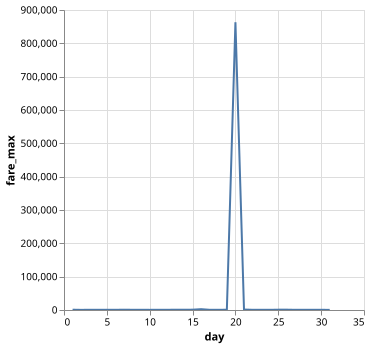
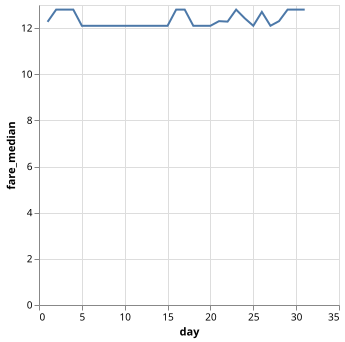
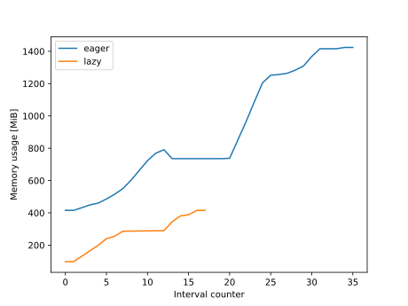
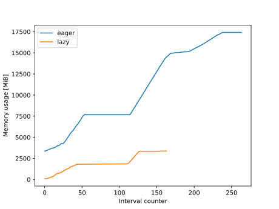

Data Science with Polars
Last updated on 2026-10-12 | Edit this page
Estimated time: 60 minutes
Overview
Questions
- Dask’s
dataframesinterface looks nice, but can it go any faster?
Objectives
- Weigh the advantages and disantvantages of different data formats.
- Explain the concept of Polars expressions as another instance of lazy evaluation.
- Explore the contents of a dataset using Polars.
- Use Polars to process a dataset that doesn’t fit in memory.
The New York Taxi dataset
This chapter focuses on working with data rather than parallel computation. For this we will make use of the New York Taxi dataset, specifically the Yellow Taxi Trip Records of 2025.
You can download the data yourself, or use the script provided in the
ny-taxi folder of the parallel-python-workshop
repository that you downloaded as part of the setup for this course.
Exploring the data
We will use Polars, a package for data manipulation. It has many similarities with Pandas, however one main difference is that Polars is able to process data in parallel which is why it is used for this lesson.
The data consist of one file per month in Apache Parquet format. Parquet is designed for efficient data storage and access. The actual data are stored in a column-oriented format, and compressed so they are not directly readable like text-oriented formats such as CSV.
Data formats
Discuss the advantages and disadvantages of different data formats, at least CSV, Parquet, NPY (Numpy native data), and Pickle. What can you say with respect to performance, portability, flexibility and access to metadata?
| Format | Performance | Portability | Flexibility | Metadata |
|---|---|---|---|---|
| CSV | ❌ | ✔️ | ❌ | ❌ |
| NPY | ✔️ | ❌ | ✔️ | ❌ |
| Parquet | ✔️ | ✔️ | ✔️ | ✔️ |
| Pickle | ❌ | ❌ | ❌ | ❌ |
| Add your favourite | ? | ? | ? | ? |
The whole taxi dataset is quite large, so we start by having a look at the data of a single month:
PYTHON
import polars
data_jan = polars.read_parquet("ny-taxi/data/trip-data/yellow_tripdata_2025-01.parquet")
print(data_jan.shape)
data_jan.head()OUTPUT
(3475226, 20)
shape: (5, 20)
VendorID tpep_pickup_datetime tpep_dropoff_datetime passenger_count trip_distance RatecodeID store_and_fwd_flag PULocationID DOLocationID payment_type fare_amount extra mta_tax tip_amount tolls_amount improvement_surcharge total_amount congestion_surcharge Airport_fee cbd_congestion_fee
i32 datetime[us] datetime[us] i64 f64 i64 str i32 i32 i64 f64 f64 f64 f64 f64 f64 f64 f64 f64 f64
1 2025-01-01 00:18:38 2025-01-01 00:26:59 1 1.6 1 "N" 229 237 1 10.0 3.5 0.5 3.0 0.0 1.0 18.0 2.5 0.0 0.0
1 2025-01-01 00:32:40 2025-01-01 00:35:13 1 0.5 1 "N" 236 237 1 5.1 3.5 0.5 2.02 0.0 1.0 12.12 2.5 0.0 0.0
1 2025-01-01 00:44:04 2025-01-01 00:46:01 1 0.6 1 "N" 141 141 1 5.1 3.5 0.5 2.0 0.0 1.0 12.1 2.5 0.0 0.0
2 2025-01-01 00:14:27 2025-01-01 00:20:01 3 0.52 1 "N" 244 244 2 7.2 1.0 0.5 0.0 0.0 1.0 9.7 0.0 0.0 0.0
2 2025-01-01 00:21:34 2025-01-01 00:25:06 3 0.66 1 "N" 244 116 2 5.8 1.0 0.5 0.0 0.0 1.0 8.3 0.0 0.0 0.0There are quite a few columns to work with. For an explanation of the columns and their contents see "Data Dictionaries and MetaData" on the dataset webpage.
Grouping and aggregating
Let's say we want to know the highest fare on each day of the month.
There is no column that describes just the day of the month, only the
exact pickup time as a datetime object. Polars provides tools to work
with datetime objects. We will use these to create an
expression that describes how to obtain the day of the month
from the tpep_pickup_datetime column:
This tells Polars that:
- There is a column named
tpep_pickup_datetime - This is a datetime object
- Extract the day
- Rename the new column to
day
We did not access the actual dataset when creating this expression.
We could even have done this before loading any data at all. An
expression only describes how to process the data, without
actually executing it. Polars also supports Pandas-like syntax
(data["column_name"]), however this requires loading the
dataset first.
Next, we will create another expession to obtain the highest fare
from the fare_amount column:
Finally, we can apply these expressions to the data. We first group the data by day of the month, then we aggregate on the max fare. Finally, we sort the output by the day of the month column:
Polars has some builtin plotting tools. A line plot can be created like this:

This does not tell us much, there is an extreme outlier with a fare of over $800000 dollars! In real data, you should always check for outliers and issues in the data. For now we will simplify this by looking at the median fare. Change the fare expression to use the median, and create a new plot:
PYTHON
fare_median_expr = polars.col("fare_amount").median().alias("fare_median")
result = data_jan.group_by(day_expr).agg(fare_median_expr).sort("day")
result.plot.line("day", "fare_median")
Saving plots
Polars uses the Altair package for plotting, see here.
df.plot.line("foo", "bar") is an alias for
altair.Chart(df).mark_line(tooltip=True).encode(x="foo", y="bar").interactive().
To save a figure, use the .save("filename") method in place
of .interactive().
Median trip distance per hour
Create a plot showing the median trip distance at each hour of the day, averaged over the entire month.
Arithmetic and filtering
Polars expressions can be combined to create much more complex workflows. As an example, we will compute the cost of a taxi trip in dollars per minute for all trips in the January data. The cost of the trip is already in the dataset, but we need to create our own expression to compute the trip duration in minutes. For this we combine the pickup and dropoff time columns.
PYTHON
trip_duration_expr = (polars.col("tpep_dropoff_datetime") - polars.col("tpep_pickup_datetime")).dt.total_minutes(fractional=True)
data_jan.select(trip_duration_expr)OUTPUT
shape: (3_475_226, 1)
tpep_dropoff_datetime
f64
8.35
2.55
1.95
5.566667
3.533333
...
14.683333
26.966667
16.033333
20.3
10.75Column naming
Note that if you do not specify an alias for an expression, the first column name in the expression is reused.
We can divide the fare mount by the trip duration expression to obtain our desired result, and look at some statistics.
PYTHON
price_per_min_expr = (polars.col("fare_amount") / trip_duration_expr).alias("price_per_min")
result = data_jan.select(price_per_min_expr)["price_per_min"]
result.min(), result.mean(), result.max()OUTPUT
(-inf, nan, inf)Where do these non-finite values come from? The trip duration is sometimes zero, and diving by zero results in an infinite price per minute. Some fare amounts are actually negative, resulting in minus infinity. The mean of an array including infinities cannot be computed and results in NaN (not a number).
We can introduce a filter to select only the finite values.
PYTHON
result_finite = result.filter(result.is_finite())
result_finite.min(), result_finite.mean(), result_finite.max()OUTPUT
(-10500.0, 3.2354157502472707, 159883.72592592592)There are still clearly wrong values in the data. How you want to filter these out would depend a lot on your dataset and use case.
Now, let's look at the price per minute grouped per day of the month as we did before. First, we build the expression in the same way as before to illustrate the problem.
PYTHON
price_per_min_mean_expr = (polars.col("fare_amount") / trip_duration_expr).mean().alias("price_per_min")
data_jan.group_by(day_expr).agg(price_per_min_mean_expr).sort("day")OUTPUT
shape: (31, 2)
day price_per_min
i8 f64
1 NaN
2 NaN
3 NaN
4 inf
5 inf
... ...
27 NaN
28 inf
29 inf
30 NaN
31 NaNHere we once again see the NaN and inf values. These already appear
when calling mean, if we would filter out the non-finite
values as a last step, there would be nothing left. Instead, we have to
filter by finite values before taking the mean. We can do this
by building up our expression in multiple steps. We can also switch to
the median again to avoid outliers.
PYTHON
ppm_expr = polars.col("fare_amount") / trip_duration_expr
ppm_finite_expr = ppm_expr.filter(ppm_expr.is_finite()).median().alias("price_per_min")
result = data_jan.group_by(day_expr).agg(ppm_finite_expr).sort("day")
resultOUTPUT
shape: (31, 2)
day price_per_min
i8 f64
1 1.208481
2 1.156069
3 1.149425
4 1.167421
5 1.258065
... ...
27 1.148936
28 1.11194
29 1.1133
30 1.100917
31 1.104876Analyze the pricing
Make a plot. Investigate the pricing outliers: what is special about these days?
Parallelization in Polars
Polars has been using multiple threads to process the data all along. The number of threads used by Polars can be obtains as follows.
OUTPUT
10There is no function to the number of threads. Instead, this can be
done through an environment variable. In Linux, this is
typically done when launching a script through the terminal,
e.g. ENV_VAR=value python script_name.py. In Python, you
can also set them using the os module.
Polars reads its environment variable when you import it. Setting it when Polars is already imported has no effect. When using Jupyter Lab or similar, restart the kernel before executing the following code block.
OUTPUT
1Discussion
How much speedup do you get on the price per minute calculation with parallelization enabled vs disabled? What happens when you manually increase the number of threads beyond the default? The speedup depends not only on the CPU but also I/O performance. At some point addin more threads does not give more performance.
Before continuing, set the thread pool size back to the default by
restarting the jupyter kernel and importing polars without
changing os.environ.
OUTPUT
10Eager and Lazy processing
Polars supports lazy loading of data. In this mode, it only
scans a dataset's metadata. This allows Polars to work on datasets that
are very large, and might not even fit in your computer's memory. The
opposite of lazy loading is eager loading, which is what we
have done so far with the read_parquet function.
Before we get further into lazy loading, we will do some profiling in eager mode so we can assess the difference with lazy mode later.
PYTHON
def process(data):
day_expr = polars.col("tpep_pickup_datetime").dt.day().alias("day")
trip_duration_expr = (polars.col("tpep_dropoff_datetime") - polars.col("tpep_pickup_datetime")).dt.total_minutes(fractional=True)
ppm_expr = polars.col("fare_amount") / trip_duration_expr
ppm_finite_expr = ppm_expr.filter(ppm_expr.is_finite()).median().alias("price_per_min")
return data.group_by(day_expr).agg(ppm_finite_expr).sort("day")
data_jan = polars.read_parquet("ny-taxi/data/trip-data/yellow_tripdata_2025-01.parquet")
%timeit polars.read_parquet("ny-taxi/data/trip-data/yellow_tripdata_2025-01.parquet")
%timeit process(data_jan)OUTPUT
57.1 ms ± 4.29 ms per loop (mean ± std. dev. of 7 runs, 10 loops each)
157 ms ± 10.5 ms per loop (mean ± std. dev. of 7 runs, 1 loop each)Now we can do the same for the lazy loading mode. Lazily loading data
is done with the scan_parquet function.
PYTHON
data_lazy = polars.scan_parquet("ny-taxi/data/trip-data/yellow_tripdata_2025-01.parquet")
process(data_lazy)OUTPUT
naive plan: (run LazyFrame.explain(optimized=True) to see the optimized plan)
SORT BY [col("day")]
AGGREGATE[maintain_order: false]
[[(col("fare_amount")) / ([(col("tpep_dropoff_datetime")) - (col("tpep_pickup_datetime"))].dt.total_minutes())].filter([(col("fare_amount")) / ([(col("tpep_dropoff_datetime")) - (col("tpep_pickup_datetime"))].dt.total_minutes())].is_finite()).median().alias("price_per_min")] BY [col("tpep_pickup_datetime").dt.day().alias("day")]
FROM
Parquet SCAN [ny-taxi/data/trip-data/yellow_tripdata_2025-01.parquet]
PROJECT */20 COLUMNS
ESTIMATED ROWS: 347522Instead of the output, we see Polar's plan on how to obtain it. This
is very similar to how e.g. Dask.delayed functions. In order to execute
the commands, the collect method is used.
Let's time the lazy data loading and processing.
PYTHON
%timeit polars.scan_parquet("ny-taxi/data/trip-data/yellow_tripdata_2025-01.parquet")
%timeit process(data_lazy).collect()OUTPUT
6.5 us ± 130 ns per loop (mean ± std. dev. of 7 runs, 100,000 loops each)
164 ms ± 12.5 ms per loop (mean ± std. dev. of 7 runs, 10 loops each)Not only is scanning the dataset near-instant, the actual processing is faster too, from a total of ~214 ms to ~164 ms.
Why is the overall processing time be lower than in the eager case? With lazy processing, only the data that are actually needed are loaded from disk. Most columns are not used in this example, and are never loaded.
Similarities to Futures and Dask
We find again that using a library gives us ways to abstract and
compose computations into promises. Can you describe the similarities
(and differences!) with concurrent.futures and
dask.delayed?.
Futures are eager, whereas dask.delayed and Polars
expressions are lazy. Pythons concurrent.futures also don’t
let you chain tasks easily.
| Concept | Futures | Dask | Polars |
|---|---|---|---|
| Work | Functions | Workflows | Expressions |
| Primitives | .submit() |
@delayed |
Polars primitives |
| Composition | no | using functions | method chaining |
| Application | .result() |
.compute() |
.collect() |
Dask and Polars share the idea that computations are composable and
live in a separate universe created by using one of their primitives.
This veil is then lifted once you call .compute() or
.collect().
What sets Dask and Polars apart from standard concurrent loops is their context-aware execution pipeline. In concurrent.futures, passing a future to another function requires manual tracking and unpacking. Dask and Polars use an abstraction layer where the operations themselves understand their dependencies. They wrap your data in a continuous pipeline, meaning you can natively chain step B to step A, and the underlying framework automatically handles the scheduling, state transitions, and data flow behind the scenes.
Lazy vs eager memory use
Use the memory profiler to investigate the difference in memory use between the lazy and eager evaluation mode.
Important: due to some quirks in the memory profiler, it can only measure the memory usage properly once. If you need to run it again, first restart the Jupyter kernel. For similar reasons, ensure you first profile the lazy processing version, and only then the eager one.
Hint: Put the eager and lazy workflow in a function. Remember that the memory profiler can be used as follows to obtain data and create a plot:
PYTHON
import polars
from memory_profiler import memory_usage
trip_duration_expr = (polars.col("tpep_dropoff_datetime") - polars.col("tpep_pickup_datetime")).dt.total_minutes(fractional=True)
day_expr = polars.col("tpep_pickup_datetime").dt.day().alias("day")
ppm_expr = polars.col("fare_amount") / trip_duration_expr
ppm_finite_expr = ppm_expr.filter(ppm_expr.is_finite()).median().alias("price_per_min")
def workflow_eager():
data = polars.read_parquet("ny-taxi/data/trip-data/yellow_tripdata_2025-01.parquet")
return data.group_by(day_expr).agg(ppm_finite_expr).sort("day")
def workflow_lazy():
data = polars.scan_parquet("ny-taxi/data/trip-data/yellow_tripdata_2025-01.parquet")
return data.group_by(day_expr).agg(ppm_finite_expr).sort("day").collect()
memory_lazy = memory_usage(workflow_lazy, interval=.01)
memory_eager = memory_usage(workflow_eager, interval=.01)
import matplotlib.pyplot as plt
plt.plot(memory_eager, label='eager')
plt.plot(memory_lazy, label='lazy')
plt.xlabel('Interval counter')
plt.ylabel('Memory usage [MiB]')
plt.legend()
plt.show()
The lazy mode uses ~4 times less memory than the eager mode.
The lazy mode allows us to work on datasets that are too big in
memory. Even if the data required for the computation is too big, it
will stil work because Polars automatically chunks the data. Consider
the same price per minute calculation, but aggregrated over each month
of the year, instead of each day of January. We can again run the lazy
and eager workflows. Warning: The eager mode requires a machine with
>= 32 GB RAM. On machines with less memory, use e.g. just the first 6
months of data. This can be done by giving a list of input files to the
read_parquet / scan_parquet functions, or by
providing a wildcard like this:
"ny-taxi/data/trip-data/yellow_tripdata_2025-0[1-6].parquet".
Here we provide three versions of a script running the memory profiler.

- Polars is similar in usage to Pandas, but usually offers superior performance
- I/O performance can be an important factor in paralellization